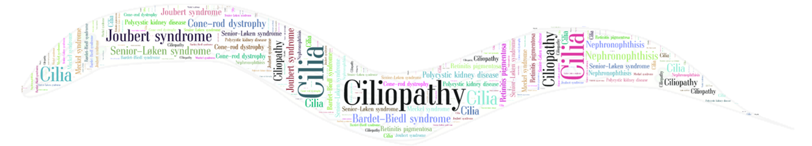

CiliaAtlas is a curated atlas classifying 359 human cell types across
13 organ systems and 83 organs by ciliation status. Each entry documents whether a cell
type bears motile, primary, nodal, modified, or no cilia, with axonemal structure,
cilia function, confidence level, and PubMed-linked evidence.
CiliaAtlas is part of the
Multidimensional Ciliary Atlas (MCA) project.
This resource allows researchers to: